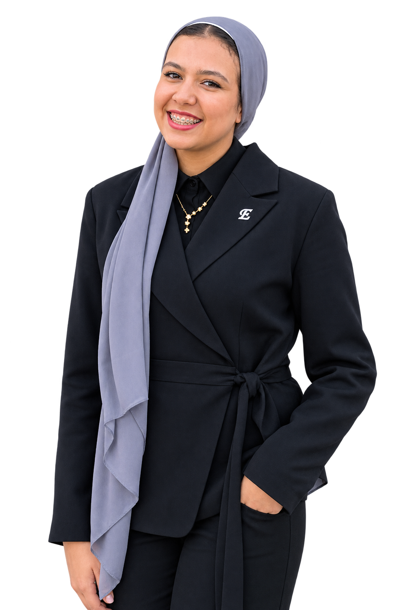

Academic focus on railway systems, mechanical technology and electric trains, supported by a working electric train model project.
RAILWAY TECHNOLOGY STUDENT / AUTOMOTIVE MECHANIC
ESRAA AHMEDABDELMONEIM
MECHANICAL KNOW-HOW. RAILWAY CURIOSITY. PRACTICAL PROBLEM-SOLVING.

01PROFILE / ENGINEERING
BASED IN GIZA, EGYPT
RAILWAY TECHNOLOGY
SCROLL TO EXPLORE
RAILWAY TECHNOLOGY
02 / 06CAPABILITIES
EXPERTISE
FROM WORKSHOP TO RAILWAY,A TECHNICAL FOUNDATION BUILT THROUGH HANDS-ON TRAINING AND ACADEMIC PROJECTS.
Automotive maintenance and repair training, with a dual-vocational foundation as a Motor Vehicle Mechatronics Technician.
Interest and practical preparation in troubleshooting, technical problem-solving, workshop practice and attention to quality.
Academic project work exploring electric train operation and a concept for harvesting kinetic energy from moving trains.
03 / 06PROFILE
ABOUT
PROFILE / GIZA, EGYPT
I am Esraa Ahmed Abdelmoneim, a Railway Technology student at October 6 Technological University with a technical background in automotive mechanics.
My training includes 400 hours of automotive maintenance and repair, alongside academic and professional programs in engineering, entrepreneurship and innovation.
I am interested in railway systems, mechanical technology, electric trains, fault diagnosis and practical technical problem-solving. I bring teamwork, attention to detail, rapid learning and a steady approach under pressure.
EDUCATIONRAILWAY TECHNOLOGY PROGRAM
TECHNICAL BACKGROUNDAUTOMOTIVE MECHANICS
LOCATIONGIZA, EGYPT
04 / 06EXPERTISE
SKILLS
01Automotive MechanicsMAINTENANCE / REPAIR
02Mechanical SystemsTECHNICAL FOUNDATION
03Electric Train ConceptsACADEMIC PROJECT
04Fault Diagnosis & TroubleshootingPROBLEM-SOLVING
05Practical Workshop SkillsHANDS-ON TRAINING
06Basic Railway TechnologyRAILWAY SYSTEMS
07Energy Harvesting SystemsPROJECT CONCEPT
08Quality AssuranceATTENTION TO DETAIL
09Teamwork & CollaborationSOFT SKILLS
10Rapid Learning & AdaptabilitySOFT SKILLS
11Time ManagementSOFT SKILLS
12Technical CommunicationSOFT SKILLS
13Working Under PressureSOFT SKILLS
CAREER INTERESTS
Railway technology · Electric trains · Railway mechanical systems · Automotive technology · Maintenance and troubleshooting · Railway engineering technology · Sustainable energy applications
05 / 06ACADEMIC / INDEPENDENT
PROJECTS
01↗
02
Electric Train Model
ACADEMIC PROJECTDeveloped a working model to explore the basic principles of electric train operation and its mechanical components.
Kinetic Energy Harvesting for Trains
ACADEMIC / INDEPENDENT PROJECTDeveloped a concept using a dynamo and turbine mechanism to generate electricity from the movement of trains.
ELECTRIC
TRAIN MODEL
TRAIN MODEL
06 / 06EDUCATION, TRAINING & AWARDS
EXPERIENCE
Railway Technology Program
Faculty of Industry and Energy · October 6 Technological University.
Academic Excellence Award
Placed 3rd with an Excellent (امتياز) grade in the second year of the Railway Technology Program.
Automotive Maintenance & Repair Trainee
Ghabbour Development Foundation, in cooperation with SIS-Middle East · Completed 400 hours of practical field training at affiliated service centers.
SIS Certificate — German Dual System Equivalent
Ghabbour Automotive School, Egypt · Graduated among the top of the class, with theoretical and practical automotive technology training.
Motor Vehicle Mechatronics Technician
Dual vocational training based on the German model · German-Arab Chamber of Industry and Commerce (AHK) and DIHK.
Mechanical Engineering CAD Trainee & Competitor
Africa Tech Challenge (ATC 10), with the Ministry of Education of Kenya, AVIC International and October 6 Technological University · Grade A.
The Arab Contractors
Practical exposure to engineering and contracting environments and large-scale project operations.
ERMAS
Technical training to strengthen practical skills and industry knowledge.
Akhbar El Youm Training Center
Professional training focused on practical workplace skills.
Entrepreneurship & Innovation Trainee
ITIDA | TIEC — InnovEgypt Program · Completed a 45-hour course in entrepreneurship and innovation.
Entrepreneurship Awareness
InnoEgypt · Sessions covering entrepreneurship, business development and startup fundamentals.
LET'S CONNECTCONTACT
CONTACT
INTERESTED IN RAILWAY TECHNOLOGY
OR AUTOMOTIVE MECHANICS? LET'S CONNECT.